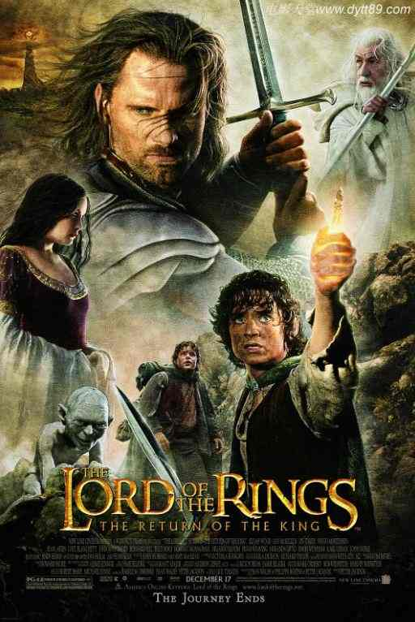
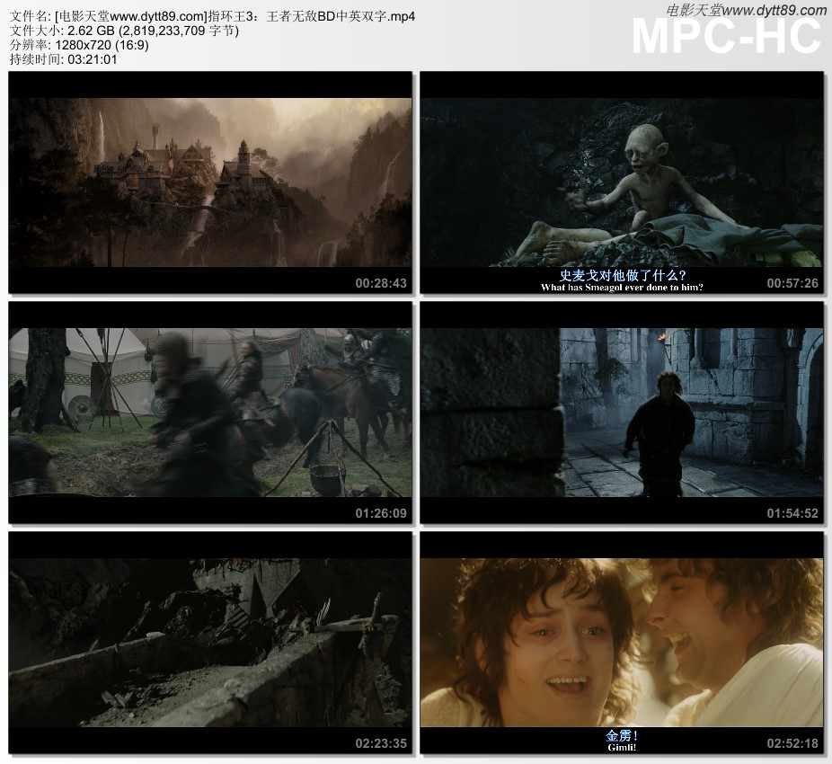

指环王3：王者无敌BD双语双字
片名：指环王3：王者无敌
发布时间：2021-04-24
指环王3：王者无敌迅雷下载地址和剧情：
◎译 名 魔戒三部曲：王者再临(台/港)/指环王III：王者无敌/魔戒3：王者归来/指环王3：国王归来/指环王3：皇上回宫(豆友译名)
◎片 名 The Lord of the Rings: The Return of the King
◎年 代 2003
◎产 地 美国/新西兰
◎类 别 剧情/动作/奇幻/冒险
◎语 言 英语/昆雅语/古英语/辛达林语
◎字 幕 中英双字幕
◎上映日期 2004-03-12(中国大陆)/2003-12-17(美国)
◎豆瓣评分 9.2/10 from 541317 users
◎IMDb评分 8.9/10 from 1587734 users
◎文件格式 x264 + ACC
◎视频尺寸 1280 x 720
◎文件大小 2819 MB
◎片 长 202 Mins
◎导 演 彼得·杰克逊
◎主 演 西恩·奥斯汀
维果·莫腾森
奥兰多·布鲁姆
伊恩·麦克莱恩
肖恩·宾
多米尼克·莫纳汉
丽芙·泰勒
约翰·贝西
凯特·布兰切特
比利·博伊德
萨德文·布罗菲
阿利斯泰尔·布朗宁
马尔顿·索克斯
伯纳德·希尔
伊安·霍姆
布鲁斯·霍普金斯
Ian Hughes
劳伦斯·马克奥雷
Noel Appleby
布雷特·麦肯齐
Alexandra Astin
Sarah McLeod
Maisy McLeod-Riera
约翰·诺贝尔
Paul Norell
米兰达·奥图
布鲁斯·菲利普斯
沙恩·朗吉
约翰·瑞斯-戴维斯
Todd Rippon
安迪·瑟金斯
Harry Sinclair
乔尔·托贝克
卡尔·厄本
史蒂芬·乌瑞
雨果·维文
大卫·文翰
阿兰·霍华德
萨拉·贝克
Robert Pollock
佩特·史密斯
杰德·布罗菲
菲利普·格里夫
布拉德·道里夫
克里斯托弗·李
布鲁斯·斯宾斯
Gino Acevedo
Jarl Benzon
Jorn Benzon
Robert Catto
Michael Elsworth
彼得·杰克逊
Sandro Kopp
安德鲁·莱斯尼
约瑟夫·米卡-亨特
亨利·莫腾森
克雷格·帕克
克里斯蒂安·瑞沃斯
迈克尔·斯曼内科
霍华德·肖
约翰·斯蒂芬森
理查德·泰勒
◎标 签 电影天堂|经典电影|美国|新西兰|2003|TOP250部经典电影|TOP250之NO.33|剧情| 动作|奇幻|冒险
◎简 介
魔幻战争逐渐进入高潮阶段。霍比特人弗拉多（伊利亚·伍德 Elijah Wood 饰）携带着魔戒，与伙伴山姆（Sean Astin 饰）以及狡猾阴暗的咕噜等前往末日山，一路上艰难险阻不断，魔君索伦为阻止魔戒被销毁用尽全力阻挠。另一方面，白袍巫师甘道夫（伊安·麦克莱恩 Ian McKellen 饰）率中土勇士们镇守刚铎首都——白城米那斯提里斯。魔兽大军压境，黑暗与光明的决战即将来临……
本片是“指环王三部曲”的终结篇，根据英国作家J.R.R.托尔金（J.R.R. Tolkien）同名魔幻巨著《指环王》（The Lord of the Rings）改编，并荣获2004年第76届奥斯卡最佳影片、最佳导演、最佳改编剧本、最佳剪辑、最佳艺术指导、最佳服装设计、最佳化妆、最佳视觉效果、最佳音效、最佳配乐和最佳歌曲等11项大奖。
◎获奖情况
第76届奥斯卡金像奖(2004)
最佳影片 巴里·M·奥斯本/弗兰·威尔士/彼得·杰克逊
最佳导演 彼得·杰克逊
最佳改编剧本 弗兰·威尔士/彼得·杰克逊/菲利帕·鲍恩斯
最佳剪辑 杰米·塞尔柯克
最佳视觉效果 Alex Funke/吉姆·瑞吉尔/乔·莱特瑞/兰德尔·威廉·库克
最佳混音 迈克·亨吉斯/哈蒙德·匹克/克里斯托弗·博伊斯/迈克尔·斯曼内科
最佳艺术指导 丹·汉纳/格兰特·梅杰/艾伦·李
最佳服装设计 恩吉拉·迪克森/理查德·泰勒
最佳化妆 理查德·泰勒/彼得·金
最佳原创配乐 霍华德·肖
最佳原创歌曲 霍华德·肖/安妮·蓝妮克丝/弗兰·威尔士
第61届金球奖(2004)
电影类 最佳剧情片
电影类 最佳导演 彼得·杰克逊
电影类 最佳原创配乐 霍华德·肖
电影类 最佳原创歌曲 弗兰·威尔士/安妮·蓝妮克丝/霍华德·肖
第57届英国电影学院奖(2004)
电影奖 最佳影片 巴里·M·奥斯本/彼得·杰克逊/弗兰·威尔士
电影奖 最佳导演(提名) 彼得·杰克逊
电影奖 最佳男配角(提名) 伊恩·麦克莱恩
电影奖 最佳改编剧本 菲利帕·鲍恩斯/彼得·杰克逊/弗兰·威尔士
电影奖 最佳摄影 安德鲁·莱斯尼
电影奖 最佳剪辑(提名) 杰米·塞尔柯克
电影奖 最佳化妆/发型(提名) 彼得·金/Peter Owen/理查德·泰勒
电影奖 最佳服装设计(提名) 恩吉拉·迪克森/理查德·泰勒/恩吉拉·迪克森/理查德·泰勒
电影奖 最佳艺术指导(提名) 格兰特·梅杰
电影奖 最佳特殊视觉效果 吉姆·瑞吉尔/兰德尔·威廉·库克/乔·莱特瑞/Alex Funke
电影奖 最佳原创音乐(提名) 霍华德·肖
电影奖 最佳音效(提名) 迈克·亨吉斯/David Farmer/迈克尔·斯曼内科 /克里斯托弗·博 伊斯/哈蒙德·匹克/迈克·霍普金斯 /伊桑·范德莱恩
电影奖 观众选择奖
第28届日本电影学院奖(2005)
最佳外语片(提名)
第4届美国电影学会奖(2003)
年度佳片
◎电影讲堂
导演彼得·杰克逊客串了一个被精灵王子一箭射死的蛮族海盗。影片中客串蛮族海盗的还包括：维塔工作室的老大理查德·泰勒、摄影指导安德鲁·莱斯涅、制片人里克·波拉斯等。
阿拉贡下船后在佩兰诺平原上杀掉的第一个半兽人是由饰演阿拉贡的演员维果·莫特森的儿子亨利扮演的。
凶恶的大蜘蛛尸罗的原型是一种新西兰蜘蛛，而导演本人彼得·杰克逊很怕蜘蛛！这也许就是他能把尸罗拍得这么恐怖的原因吧。
电影中的最后一句台词——“我回来了。”也是托尔金原著小说的最后一句话。
弗罗多有场戏被大蜘蛛的丝缠得像个木乃伊，伊利亚·伍德称那身丝网为“世界上最大的避孕套”， 他穿着这身网一整天，彼得·杰克逊说：“不知道他是怎么解决上洗手间的问题的”。
原来的剧本中并没有皮平唱歌的情节，不过编剧菲利帕·鲍恩斯在某次剧组集体K歌时发现饰演皮平的比利·博伊德嗓音很美，于是临时给他加了戏，歌词也是博伊德在两天时间内自己创作的。
影片结尾字幕处让主要演员的名字跟其肖像一起出现的建议是伊恩·麦克莱恩（甘道夫）提出的。
在码头送别弗罗多的情节是四个霍比特人拍的最辛苦的戏，因为他们需要一直哭。四个演员好不容易拍完却因为饰演山姆的西恩·奥斯汀穿错衣服必须重拍，追求完美的彼得·杰克逊让他们哭了一遍又一遍。
片尾曲《Into the West》的创作灵感来源于一个罹患癌症的新西兰少年，在他最后的日子里，彼得·杰克逊带他去片场观看拍摄过程，他也和演员们成为了好友。他去世后，编剧受他的启发写下了歌词。
拍摄结束后演员们都得到了礼物：他们所扮演人物的标志性道具，丽芙·泰勒得到了精灵公主快死时穿的那条裙子，奥兰多·布鲁姆则得到了莱格拉斯的一把弓 。
◎影片评价
史诗的终章。
相比于世纪之交的《星战前传》三部曲和《黑客帝国》三部曲，影片的技术运用是最复杂的，它不但有《星战前传》那种CGI工艺，也使用了新西兰纯手工工艺的精雕技术，电影中的刚铎国、魔多都是由此呈现。模型+布景，辅以电脑修饰，打造出一个只有胶片中才存在的中土世界。每个镜头都能和新西兰美好的自然风光结合的天衣无缝，成为模型、动画和动作捕捉的典范操作。
《指环王：国王归来》被批过于冗长，原本以为看到魔戒被毁了，电影应该要结束了。后面竟然还有阿拉冈登基与结婚的画面，之后又再接霍比特人山姆结婚，竟然还有弗拉多纪录关于他冒险的书，最后还有因伤痕无法复原，离开中土世界，进入神之境这一些列的情节。影片虽然超卖座，但结局过于冗长，似乎让部分影迷不能谅解。
但是电影特效带来那波澜壮阔的战争，史诗级的氛围营造，每一条精心编排的支线皆在终极一战予以交融，即便在今日的重温依旧能让人荡气回肠，在此之中爱与勇气的光芒才是那中土世界最为令人神往的地方。
◎影片截图

下载地址列表::点击下方荐片链接即可下载 本站专属下载器 专治迅雷无法下载
下载地址列表::由于迅雷不停封此下载链接，此链接已经更换成本站独家高速下载器，保证速度超级快 本站专用电影下载地址：www.jianpian.com！
magnet:?xt=urn:btih:64646a6f5e2665176f90c61a1cff57a6ac3392ed&dn=[电影天堂www.dytt89.com]指环王3：王者无敌BD中英双字.mp4magnet:?xt=urn:btih:a4a143e079767cb1433f53383b78c39ad5453238&dn=[电影天堂www.dytt89.com]指环王3：王者无敌(加长版)-2003_BD国英双语中英双字.mp4请把www.dvdqvod.cn分享给你的朋友,更多人使用,速度更快 DVDwww.dvdqvod.cn欢迎你每天来！